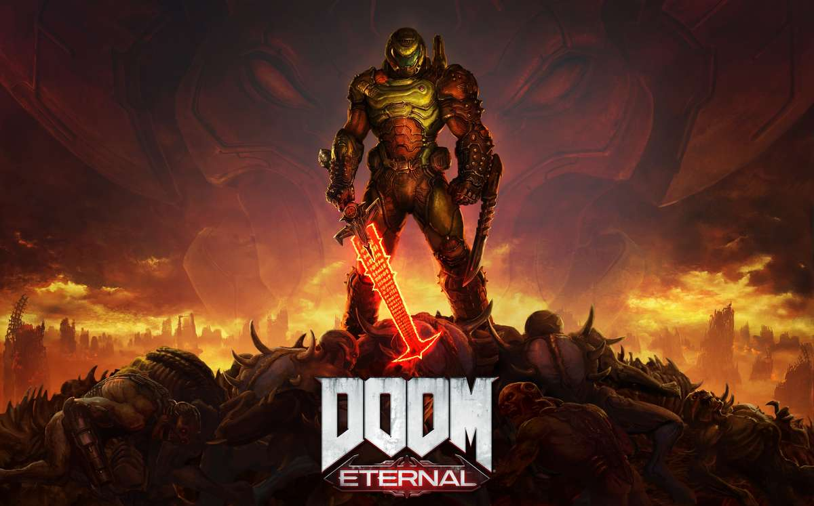
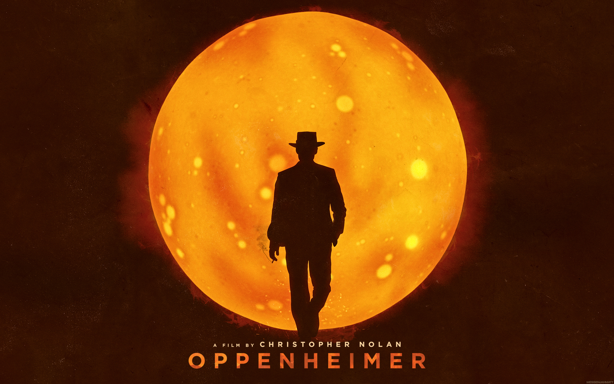

Hi there ! I’m a PhD student in HPC-AI at the University of Bristol, investigating parallel algorithms for combined data-driven and physics-informed simulation and control. I’m advised by Dr Tom Deakin, Pr David Barton, and Pr Simon McIntosh-Smith.
My research interests are at the intersection of Artificial Inteligence, Scientific Computing, and High Performance Computing. Some of the questions I ponder are:
- How to best combine classical knowledge of physical systems with AI approaches ?
- How to scale existing physics-based AI techniques to real-world engineering problems: this involves questions like strong/weak scaling and uncertainty quantification.
- What role do humans and domain scientists in particular play in the envisionned systemic symbiose above ?
- The parallel computational theory of the causal mind as broadly covered by John R. Searle in Philosophy of Mind and Malcolm Gladwell in Blink.
For more details, read my CV or view my profile on LinkedIn. If it grabs your attention, please do send me a message.
Cornerstones
A few quotes can describe me better than any essay I could ever write:
- God grant me the serenity to accept the things I cannot change, courage to change the things I can, and the wisdom to know the difference - The Serenity Prayer
- Time waits for no one - probably from The Girl Who Leapt Through Time
Hobbies

